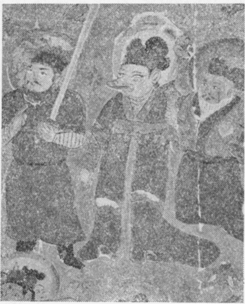

もう十年昔の話になるが、学士院賞を貰った時に、その金で『東瀛珠光』と『西域画聚成』とを買ったことがある。
学士院賞というものは、私たちが中学へはいって間もない頃創められたもので、賞金は千円であった。当時千円という金額が決められたのについて、もちろん嘘ではあろうが、京童はこういうかげ口をきいたものだそうである。即ち、学者は一生研究していても、到底自分の家を持つことは出来ない、せめてとくに優れた研究をした学者には、家くらいは建てさせようというので、千円と賞金額がきまったというのである。
ところがその千円がいつまでも動かないので、私たちの時代になると、賞金では、友人を一晩呼んで御馳走することも出来なくなっていた。現に私から一年か二年前にこの賞金を貰った化学の先生が、親戚及び知友をまねいて、一夕内祝の宴をはったら、大いに足を出したという話であった。それで私は、そういうことは一切やらずに、丁度紀元二千六百年の記念出版として、審美書院から売り出されていた『東瀛珠光』と『西域画聚成』とを買うことにした。両方併せて丁度千円で、まことに工合のよい話であった。
ちょっと思い切ったことをしたようでもあるが、今から思うと、それは甚だ賢明であった。道楽の本は、そういう機会がないと、なかなか買えないものである。それにこの両者は、まことにいい取合せであって、揃えてもっていないと、面白味は半減する、と私は思っている。
『東瀛珠光』の方は、前にも一度出たことがあり、かなり方々にあるようであるが、『西域画聚成』は、紀元二千六百年記念として初めて出版され、三百部限定であるから、数は甚だ限られている。それに今度の戦災で大部分失われているだろうから、今では私の御自慢の蔵書の一つになっている。もっとも定価二百円の本であるから、御愛嬌といえば、正にそのとおりである。
説明するまでもないが、この画集は、中央亜細亜タクラマカンの沙漠の中から発掘された古代画を集めたもので、主としてスタイン、ル・コック、ペリオなどの蒐集品の中から抜萃されたものである。半数近くは、木版あるいは原色版であって、その色が非常によく出ている点が有難いのである。いうに千年以上の年月を沙漠の中に埋れていて、今日初めて陽の目を見たこれらの絵は、まるで昨日描かれたように、鮮明な色彩である。そしてその色彩が、実にあざやかに再現されているので、唯ぼんやり眺めているだけで、十分楽しいのである。
西域画の美人と正倉院の樹下美人図との類似は、既にいい古されていることであるが、スタインがカラコウジャ附近の墳墓中から発見した、唐朝俗図断片中の美人の額にある飾りマークを、『東瀛珠光』の中で探して行くと、樹下美人図の中にそれがちゃんとある。奈良の戒壇院の四天王は、妙な鎧を着ていて、袖口が猛獣の頭の形になっている。
こういう小さい発見は、もちろん素人芸の話で、この方面の専門家には、全く微苦笑ものであるにちがいない。しかし本人が一人で喜んでいるのだから、別に害はないであろう。

ところが、これは恐らく私の発見だろうと思って、ひとりで悦に入っていることが一つある。それは『西遊記』の八戒を発見したことである。同じく敦煌発見の絵の中に、降魔図という大きな絵がある。これは仏伝中の一つであって、宋朝のものと推定されている。中央の岩上に結跏跌坐の［＃「結跏跌坐の」はママ］釈尊を描き、その周囲に全画面を埋めて、二百ばかりの魔衆が克明に描き込んである。空想の限りをつくして、ありとあらゆる魔王魔子、妖怪変化が描いてあるが、その中に一人『西遊記』の八戒がいるのである。鼻のつき出た猪八戒先生が、『西遊記』の挿絵どおりの顔をして立っている。朱と黄のなかなか立派な服を着て、黄金の冠なんかかぶって大いにすましている恰好である。左手に熊手をふりかぶっているところまで、正に『西遊記』そのままである。
猪八戒先生の活躍舞台は、もちろん西域である。この絵が宋初のものとすれば、われわれに馴染深い『西遊記』の出現よりも、数百年昔に描かれたものであるから、タクラマカンの死の荒野の中には、やはり八戒はいたのである。もう少し詳しく探したら、斉天大聖も沙和尚も出てくるかもしれない。牛魔王や羅刹女のような諸君は、あまり多すぎて、どれとも決めがたい。あらゆる魔衆の蝟集があって、そのうちから任意に選び出すことが出来るからである。
この絵は地を群青に塗りつぶし、極めてあざやかな朱と黄色とを使って、魔衆を描き出している。稚拙といえば正に稚拙なところもあるが、そこには古代人の力強い感動の動きを伝えるものがある。技術的には、天才児童のパステル画であるが、八戒や牛魔王を見知り、一方釈尊の姿にも接していたこの時代の人の、頭の作用がよく表現されている絵である。
今度のピカソの展覧会については、いろいろな議論がされているようである。「マチスはまあ分るが、ピカソはどうも」というのが、一番無難なせりふになっているらしい。なかなかせりふにも気を使わねばならないもののようである。しかし私のように、天山北路の沙漠の中に埋れていた絵に凝っていれば、そういう気骨は折れないので、気持は甚だ楽である。
ところでピカソは敬遠するとして、この頃の西洋のいわゆる新しい絵について、この八戒の話をちょっと思い出したことがある。妙な片輪の人体の一部とか、骸骨とか、われわれの感情に全く無縁な機械の部分品とかが、ただむやみと雑然と、二重写しの写真のように描き出されている絵がよくある。ああいう絵を日本人が理解しようとすることは、ひょっとしたら、出来ないことではないであろうか。
一般の西洋人が降魔図から受ける印象と、孫悟空や八戒とともに育ってきた私たちが、この絵から感ずるものとは、本質的に異なっていても、ちっとも不思議ではない。
東洋画の心髄は、見る人を協同製作者として持つところにあるということは、既にいろいろな人によっていわれている。茶の湯の芸術は、鑑賞家が演出者を兼ねるところにあるということも、谷川（徹三）さんをはじめたくさんの人のいわれるとおりである。
ところで凡人には分らない近頃の不思議な洋画のことであるが、あれもあるいは観客を協同製作者としようとする一つの試みであるのかもしれない。もしそうだとすると、これは西洋人の試みた東西文明の融合の一つの現われであるということになる。主張する気持は全然ないので、こういう説明も、一つの可能性として考えられるというだけである。
もしそうだとしたら、ああいう絵は、到底われわれには理解出来ないものであっても、ちっとも差しつかえない。西洋人とわれわれとのものの感じ方は、まるでちがっているからである。例えばディッケンズの『クリスマス・カロル』の中に出てくる幽霊は、われわれは到底理解もまた感得することも出来ない幽霊である。あの幽霊は、鎖をひきずってくるところはちょっと分るが、それは「過去」が幽霊となって現われてくるものである。われわれは、手をぶら下げ、すそをなびかせた幽霊は知っているが、抽象名詞が化けて出た代物には、全然無縁である。だからこの頃の奇妙な絵に描かれている頭蓋骨の役割を理解出来ないのが、むしろ当然なのではないであろうか。
もっともこういう話は、けっきょく西域画や正倉院の絵、即ち千年以上も昔の芸術が好きだという孤老の言であるから、新進の作家諸兄が、何も気にされることはない。
（昭和二十六年十一月）